Ratio Approach (Load Factor)#
import os
os.chdir("../../")
import numpy as np
import pandas as pd
from src.tourism.mtsmodel import *
from src.tourism.ts_eval import *
import seaborn as sns
sns.set_style("whitegrid")
import matplotlib.pyplot as plt
import sys
import arviz as az
try:
import bambi as bmb
except ImportError:
!{sys.executable} -m pip install --upgrade bambi
import bambi as bmb
import warnings
warnings.filterwarnings("ignore")
[2023-12-16 15:57:15 - pytensor.tensor.blas:1016 - WARNING] Using NumPy C-API based implementation for BLAS functions.
Show code cell source
def plot_observed(data, figsize=(12, 8)):
_, ax = plt.subplots(figsize=figsize)
ax.plot(data["date"], data["total"], alpha=0.4, color="blue")
ax.plot(data["date"], data["pred_mean"], alpha=0.4, color="green")
ax.set_title("Number of Tourists")
ax.set_xlabel("Date")
ax.set_ylabel("Number")
return ax
for country in ["samoa", "palau", "tonga", "solomon_islands", "vanuatu"]:
mod = RatioPipe(country=country,
training_ratio=0.95,
y_var="total",
exog_var=["covid", "stringency_index", "samoa_travel"],
transform_method="scaledlogit")
mod.read_and_merge()
mod.transform()
mod.fit(formula="ratio~covid * stringency_index+C(quarter)+" +
str(country) + "_travel")
pred_df = mod.get_prediction()
mod.get_benchmark_evaluation()
display(mod.benchmark)
| MSE | RMSE | MAE | SMAPE | |
|---|---|---|---|---|
| naive | 7.970104e+06 | 2823.137282 | 1518.795455 | 49.120902 |
| mean | 4.747392e+07 | 6890.131975 | 6027.062716 | 155.537953 |
| seasonal naive | 1.277842e+08 | 11304.165437 | 8357.200000 | 184.252367 |
| ratio | 2.071537e+06 | 1439.283344 | 736.658009 | 131.050625 |
| MSE | RMSE | MAE | SMAPE | |
|---|---|---|---|---|
| naive | 1.298621e+06 | 1139.570483 | 677.477273 | 53.868245 |
| mean | 1.219030e+07 | 3491.460526 | 3125.890370 | 130.888109 |
| seasonal naive | 3.259447e+07 | 5709.156811 | 4496.422222 | 172.783359 |
| ratio | 5.361937e+05 | 732.252502 | 398.865184 | 38.850790 |
| MSE | RMSE | MAE | SMAPE | |
|---|---|---|---|---|
| naive | 1.045461e+06 | 1022.477747 | 597.257143 | 69.556373 |
| mean | 7.898678e+06 | 2810.458659 | 2511.586420 | 147.552078 |
| seasonal naive | 2.298302e+07 | 4794.060863 | 3770.944444 | 175.765515 |
| ratio | 2.180673e+05 | 466.976806 | 264.960357 | 91.467507 |
| MSE | RMSE | MAE | SMAPE | |
|---|---|---|---|---|
| naive | 1.721267e+05 | 414.881597 | 268.478261 | 46.835106 |
| mean | 1.290167e+06 | 1135.855000 | 1065.215278 | 100.969388 |
| seasonal naive | 5.452023e+06 | 2334.956763 | 2232.833333 | 178.391803 |
| ratio | 4.762116e+04 | 218.222737 | 143.623769 | 21.253277 |
| MSE | RMSE | MAE | SMAPE | |
|---|---|---|---|---|
| naive | 2.446383e+06 | 1564.091833 | 808.452381 | 45.153360 |
| mean | 2.273834e+07 | 4768.473803 | 4264.861006 | 156.566459 |
| seasonal naive | 6.005609e+07 | 7749.586508 | 5836.813953 | 182.249894 |
| ratio | 5.944251e+05 | 770.989718 | 471.720655 | 127.418109 |
for country in ["samoa", "palau", "tonga", "solomon_islands", "vanuatu"]:
mod = RatioPipe(country=country,)
print(f"\n{country.upper()}'s Official and Avaition Data.")
mod.read_and_merge()
print(f"\n Create Loaded Factor for {country.upper()}:")
mod.transform()
optimal_lag = int(4 * (len(mod.data)/100) ** (2/9)) + 1
print(f"\n Regression {country.upper()}:")
mod.fit(formula="ratio~covid * stringency_index+C(quarter)+"+str(country)+"_travel",
maxlags=optimal_lag)
pred_df = mod.get_prediction_df()
mean_pred, naive_pred = \
mean_method(pred_df["total"]), naive_method(pred_df["total"])
benchmark = pd.DataFrame()
eval_name = ["mean", "naive", "ratio"]
for idx, pred in zip(eval_name, [mean_pred, naive_pred, pred_df["pred_mean"]]):
eval_df = pd.DataFrame(calculate_evaluation(
pred_df["total"], pred), index=[idx])
benchmark = pd.concat([benchmark, eval_df])
display(benchmark)
benchmark.to_csv(mod.country_data_folder + "/model/lf_eval_" + str(country) + ".csv",
encoding="utf-8")
saved_pred_path = mod.country_data_folder + \
"/model/lf_" + str(country) + ".csv"
pred_df.to_csv(saved_pred_path, encoding="utf-8")
blr = bmb.Model(
"ratio ~ covid*stringency_index + C(quarter) +" + str(country) + "_travel", mod.data)
trace = blr.fit(tune=2000, draws=2000, return_inferencedata=True)
display(az.summary(trace, round_to=3))
az.plot_forest(trace)
# Bayesian Interval
blr.predict(trace, kind="pps")
posterior_stacked = az.extract(trace)
predicted = posterior_stacked["ratio_mean"]
# Compute the mean of the predictions, plotted as a single line.
predicted_mean = predicted.mean("sample") * mod.data["seats_arrivals_intl"]
# Compute 94% credible intervals for the predictions, plotted as bands
hdi_data = np.quantile(predicted, [0.03, 0.97], axis=1)
upper = hdi_data[0] * mod.data["seats_arrivals_intl"]
lower = hdi_data[1] * mod.data["seats_arrivals_intl"]
ax = plot_observed(mod.data)
ax.plot(mod.data["date"], predicted_mean, color="green")
ax.fill_between(mod.data["date"], upper, lower, alpha=0.4, color="green")
SAMOA's Official and Avaition Data.
Create Loaded Factor for SAMOA:
Regression SAMOA:
OLS Regression Results
==============================================================================
Dep. Variable: ratio R-squared: 0.850
Model: OLS Adj. R-squared: 0.822
Method: Least Squares F-statistic: 50.85
Date: Fri, 14 Jul 2023 Prob (F-statistic): 4.55e-17
Time: 16:30:44 Log-Likelihood: 30.672
No. Observations: 45 AIC: -45.34
Df Residuals: 37 BIC: -30.89
Df Model: 7
Covariance Type: HAC
==========================================================================================
coef std err z P>|z| [0.025 0.975]
------------------------------------------------------------------------------------------
Intercept 0.3445 0.198 1.740 0.082 -0.044 0.733
C(quarter)[T.2] 0.0400 0.079 0.505 0.613 -0.115 0.195
C(quarter)[T.3] 0.1385 0.066 2.113 0.035 0.010 0.267
C(quarter)[T.4] 0.0512 0.033 1.574 0.116 -0.013 0.115
covid -0.3052 0.174 -1.757 0.079 -0.646 0.035
stringency_index -0.0100 0.005 -2.031 0.042 -0.020 -0.000
covid:stringency_index 0.0047 0.005 0.890 0.373 -0.006 0.015
samoa_travel 0.2829 0.241 1.174 0.241 -0.190 0.755
==============================================================================
Omnibus: 17.060 Durbin-Watson: 0.975
Prob(Omnibus): 0.000 Jarque-Bera (JB): 27.071
Skew: 1.093 Prob(JB): 1.32e-06
Kurtosis: 6.108 Cond. No. 562.
==============================================================================
Notes:
[1] Standard Errors are heteroscedasticity and autocorrelation robust (HAC) using 4 lags and with small sample correction
| date | ratio | total | seats_arrivals_intl | mean | mean_se | mean_ci_lower | mean_ci_upper | obs_ci_lower | obs_ci_upper | pred_mean | |
|---|---|---|---|---|---|---|---|---|---|---|---|
| 0 | 2019-01-01 | 0.522368 | 13755.0 | 26332.0 | 0.621337 | 0.065119 | 0.493705 | 0.748968 | 0.327609 | 0.915064 | 16361.033442 |
| 1 | 2019-02-01 | 0.522171 | 9044.0 | 17320.0 | 0.546506 | 0.052126 | 0.444341 | 0.648670 | 0.262915 | 0.830096 | 9465.476885 |
| 2 | 2019-03-01 | 0.535575 | 11163.0 | 20843.0 | 0.527865 | 0.060020 | 0.410228 | 0.645502 | 0.238340 | 0.817390 | 11002.290740 |
| 3 | 2019-04-01 | 0.692899 | 14413.0 | 20801.0 | 0.573619 | 0.095068 | 0.387289 | 0.759948 | 0.250038 | 0.897200 | 11931.843012 |
| 4 | 2019-05-01 | 0.650818 | 13565.0 | 20843.0 | 0.661691 | 0.048354 | 0.566918 | 0.756464 | 0.380679 | 0.942704 | 13791.631497 |
| MSE | RMSE | MAE | SMAPE | |
|---|---|---|---|---|
| mean | 4.747392e+07 | 6890.131975 | 6027.062716 | 155.537953 |
| naive | 7.970104e+06 | 2823.137282 | 1518.795455 | 49.120902 |
| ratio | 2.107651e+06 | 1451.775046 | 763.990597 | 131.108537 |
Auto-assigning NUTS sampler...
Initializing NUTS using jitter+adapt_diag...
Multiprocess sampling (4 chains in 4 jobs)
NUTS: [ratio_sigma, Intercept, covid, stringency_index, covid:stringency_index, C(quarter), samoa_travel]
100.00% [16000/16000 00:11<00:00 Sampling 4 chains, 0 divergences]
Sampling 4 chains for 2_000 tune and 2_000 draw iterations (8_000 + 8_000 draws total) took 11 seconds.
| mean | sd | hdi_3% | hdi_97% | mcse_mean | mcse_sd | ess_bulk | ess_tail | r_hat | |
|---|---|---|---|---|---|---|---|---|---|
| Intercept | 0.347 | 0.136 | 0.086 | 0.599 | 0.002 | 0.001 | 4829.636 | 5526.037 | 1.001 |
| covid | -0.303 | 0.119 | -0.527 | -0.078 | 0.002 | 0.001 | 5088.282 | 4956.939 | 1.000 |
| stringency_index | -0.010 | 0.004 | -0.018 | -0.001 | 0.000 | 0.000 | 3307.540 | 4263.178 | 1.001 |
| covid:stringency_index | 0.004 | 0.006 | -0.007 | 0.015 | 0.000 | 0.000 | 3076.624 | 3998.751 | 1.001 |
| C(quarter)[2] | 0.042 | 0.064 | -0.077 | 0.165 | 0.001 | 0.001 | 3984.563 | 5088.280 | 1.002 |
| C(quarter)[3] | 0.140 | 0.065 | 0.017 | 0.261 | 0.001 | 0.001 | 4145.464 | 5373.759 | 1.001 |
| C(quarter)[4] | 0.052 | 0.064 | -0.070 | 0.169 | 0.001 | 0.001 | 4761.951 | 5324.729 | 1.001 |
| samoa_travel | 0.279 | 0.154 | -0.003 | 0.576 | 0.002 | 0.002 | 3829.551 | 5045.903 | 1.001 |
| ratio_sigma | 0.139 | 0.017 | 0.109 | 0.170 | 0.000 | 0.000 | 4232.992 | 4479.461 | 1.000 |
PALAU's Official and Avaition Data.
Create Loaded Factor for PALAU:
Regression PALAU:
OLS Regression Results
==============================================================================
Dep. Variable: ratio R-squared: 0.757
Model: OLS Adj. R-squared: 0.712
Method: Least Squares F-statistic: 13.44
Date: Fri, 14 Jul 2023 Prob (F-statistic): 1.75e-08
Time: 16:31:00 Log-Likelihood: 33.066
No. Observations: 45 AIC: -50.13
Df Residuals: 37 BIC: -35.68
Df Model: 7
Covariance Type: HAC
==========================================================================================
coef std err z P>|z| [0.025 0.975]
------------------------------------------------------------------------------------------
Intercept 0.4595 0.098 4.703 0.000 0.268 0.651
C(quarter)[T.2] -0.0601 0.057 -1.054 0.292 -0.172 0.052
C(quarter)[T.3] 0.0420 0.089 0.473 0.636 -0.132 0.216
C(quarter)[T.4] 0.0122 0.051 0.241 0.810 -0.087 0.111
covid -0.4960 0.133 -3.736 0.000 -0.756 -0.236
stringency_index -0.0088 0.002 -5.145 0.000 -0.012 -0.005
covid:stringency_index 0.0106 0.003 3.412 0.001 0.005 0.017
palau_travel 0.5631 0.252 2.234 0.026 0.069 1.057
==============================================================================
Omnibus: 6.958 Durbin-Watson: 0.613
Prob(Omnibus): 0.031 Jarque-Bera (JB): 5.769
Skew: 0.759 Prob(JB): 0.0559
Kurtosis: 3.880 Cond. No. 574.
==============================================================================
Notes:
[1] Standard Errors are heteroscedasticity and autocorrelation robust (HAC) using 4 lags and with small sample correction
| date | ratio | total | seats_arrivals_intl | mean | mean_se | mean_ci_lower | mean_ci_upper | obs_ci_lower | obs_ci_upper | pred_mean | |
|---|---|---|---|---|---|---|---|---|---|---|---|
| 0 | 2019-01-01 | 0.561695 | 7329.0 | 13048.0 | 0.568892 | 0.063856 | 0.443738 | 0.694047 | 0.288562 | 0.849223 | 7422.908852 |
| 1 | 2019-02-01 | 0.734282 | 9752.0 | 13281.0 | 0.618457 | 0.056377 | 0.507960 | 0.728954 | 0.344356 | 0.892558 | 8213.728390 |
| 2 | 2019-03-01 | 0.701865 | 9033.0 | 12870.0 | 0.620869 | 0.056211 | 0.510697 | 0.731041 | 0.346899 | 0.894839 | 7990.583924 |
| 3 | 2019-04-01 | 0.777809 | 8405.0 | 10806.0 | 0.590318 | 0.070420 | 0.452297 | 0.728340 | 0.304011 | 0.876625 | 6378.979940 |
| 4 | 2019-05-01 | 0.651848 | 7478.0 | 11472.0 | 0.494435 | 0.098075 | 0.302212 | 0.686658 | 0.178411 | 0.810459 | 5672.158297 |
| MSE | RMSE | MAE | SMAPE | |
|---|---|---|---|---|
| mean | 1.219030e+07 | 3491.460526 | 3125.890370 | 130.888109 |
| naive | 1.298621e+06 | 1139.570483 | 677.477273 | 53.868245 |
| ratio | 5.220592e+05 | 722.536632 | 403.159217 | 41.454946 |
Auto-assigning NUTS sampler...
Initializing NUTS using jitter+adapt_diag...
Multiprocess sampling (4 chains in 4 jobs)
NUTS: [ratio_sigma, Intercept, covid, stringency_index, covid:stringency_index, C(quarter), palau_travel]
100.00% [16000/16000 00:08<00:00 Sampling 4 chains, 0 divergences]
Sampling 4 chains for 2_000 tune and 2_000 draw iterations (8_000 + 8_000 draws total) took 9 seconds.
| mean | sd | hdi_3% | hdi_97% | mcse_mean | mcse_sd | ess_bulk | ess_tail | r_hat | |
|---|---|---|---|---|---|---|---|---|---|
| Intercept | 0.458 | 0.079 | 0.314 | 0.612 | 0.001 | 0.001 | 6329.552 | 5813.643 | 1.000 |
| covid | -0.488 | 0.111 | -0.701 | -0.284 | 0.001 | 0.001 | 5902.204 | 5141.634 | 1.000 |
| stringency_index | -0.009 | 0.003 | -0.014 | -0.002 | 0.000 | 0.000 | 4221.898 | 5373.154 | 1.000 |
| covid:stringency_index | 0.010 | 0.004 | 0.003 | 0.017 | 0.000 | 0.000 | 3604.963 | 4509.327 | 1.000 |
| C(quarter)[2] | -0.059 | 0.057 | -0.166 | 0.049 | 0.001 | 0.001 | 4638.155 | 5017.895 | 1.001 |
| C(quarter)[3] | 0.042 | 0.059 | -0.074 | 0.149 | 0.001 | 0.001 | 4821.238 | 5518.567 | 1.000 |
| C(quarter)[4] | 0.013 | 0.062 | -0.102 | 0.129 | 0.001 | 0.001 | 4747.722 | 5060.986 | 1.000 |
| palau_travel | 0.559 | 0.190 | 0.220 | 0.937 | 0.002 | 0.002 | 6787.743 | 5645.252 | 1.000 |
| ratio_sigma | 0.132 | 0.016 | 0.103 | 0.160 | 0.000 | 0.000 | 5368.188 | 5631.830 | 1.000 |
TONGA's Official and Avaition Data.
Create Loaded Factor for TONGA:
Regression TONGA:
OLS Regression Results
==============================================================================
Dep. Variable: ratio R-squared: 0.953
Model: OLS Adj. R-squared: 0.941
Method: Least Squares F-statistic: 81.33
Date: Fri, 14 Jul 2023 Prob (F-statistic): 6.54e-17
Time: 16:31:14 Log-Likelihood: 60.571
No. Observations: 36 AIC: -105.1
Df Residuals: 28 BIC: -92.47
Df Model: 7
Covariance Type: HAC
==========================================================================================
coef std err z P>|z| [0.025 0.975]
------------------------------------------------------------------------------------------
Intercept 0.3461 0.073 4.733 0.000 0.203 0.489
C(quarter)[T.2] 0.0854 0.051 1.684 0.092 -0.014 0.185
C(quarter)[T.3] 0.1137 0.057 1.987 0.047 0.002 0.226
C(quarter)[T.4] 0.0757 0.048 1.592 0.111 -0.018 0.169
covid -0.3512 0.065 -5.411 0.000 -0.478 -0.224
stringency_index -0.0045 0.001 -3.436 0.001 -0.007 -0.002
covid:stringency_index 0.0029 0.002 1.751 0.080 -0.000 0.006
tonga_travel 0.0640 0.110 0.580 0.562 -0.152 0.280
==============================================================================
Omnibus: 3.395 Durbin-Watson: 1.015
Prob(Omnibus): 0.183 Jarque-Bera (JB): 2.915
Skew: 0.692 Prob(JB): 0.233
Kurtosis: 2.826 Cond. No. 691.
==============================================================================
Notes:
[1] Standard Errors are heteroscedasticity and autocorrelation robust (HAC) using 4 lags and with small sample correction
| date | ratio | total | seats_arrivals_intl | mean | mean_se | mean_ci_lower | mean_ci_upper | obs_ci_lower | obs_ci_upper | pred_mean | |
|---|---|---|---|---|---|---|---|---|---|---|---|
| 0 | 2019-01-01 | 0.297294 | 4372 | 14706.0 | 0.359100 | 0.053865 | 0.253527 | 0.464674 | 0.213704 | 0.504496 | 5280.927090 |
| 1 | 2019-02-01 | 0.278131 | 2709 | 9740.0 | 0.360868 | 0.051441 | 0.260045 | 0.461691 | 0.218884 | 0.502852 | 3514.852693 |
| 2 | 2019-03-01 | 0.303732 | 3109 | 10236.0 | 0.363279 | 0.048249 | 0.268712 | 0.457845 | 0.225667 | 0.500890 | 3718.522264 |
| 3 | 2019-04-01 | 0.394065 | 4183 | 10615.0 | 0.439962 | 0.028537 | 0.384030 | 0.495894 | 0.325408 | 0.554515 | 4670.193497 |
| 4 | 2019-05-01 | 0.435655 | 5166 | 11858.0 | 0.447279 | 0.026097 | 0.396130 | 0.498428 | 0.334983 | 0.559575 | 5303.835766 |
| MSE | RMSE | MAE | SMAPE | |
|---|---|---|---|---|
| mean | 7.898678e+06 | 2810.458659 | 2511.586420 | 147.552078 |
| naive | 1.045461e+06 | 1022.477747 | 597.257143 | 69.556373 |
| ratio | 2.036229e+05 | 451.245944 | 258.523902 | 87.345914 |
Auto-assigning NUTS sampler...
Initializing NUTS using jitter+adapt_diag...
Multiprocess sampling (4 chains in 4 jobs)
NUTS: [ratio_sigma, Intercept, covid, stringency_index, covid:stringency_index, C(quarter), tonga_travel]
100.00% [16000/16000 00:09<00:00 Sampling 4 chains, 0 divergences]
Sampling 4 chains for 2_000 tune and 2_000 draw iterations (8_000 + 8_000 draws total) took 10 seconds.
| mean | sd | hdi_3% | hdi_97% | mcse_mean | mcse_sd | ess_bulk | ess_tail | r_hat | |
|---|---|---|---|---|---|---|---|---|---|
| Intercept | 0.346 | 0.040 | 0.272 | 0.421 | 0.001 | 0.000 | 5263.232 | 5249.449 | 1.001 |
| covid | -0.350 | 0.065 | -0.467 | -0.226 | 0.001 | 0.001 | 3943.427 | 4480.263 | 1.001 |
| stringency_index | -0.005 | 0.001 | -0.007 | -0.002 | 0.000 | 0.000 | 3216.648 | 4314.146 | 1.000 |
| covid:stringency_index | 0.003 | 0.002 | -0.001 | 0.007 | 0.000 | 0.000 | 2433.619 | 3743.127 | 1.000 |
| C(quarter)[2] | 0.085 | 0.030 | 0.029 | 0.141 | 0.001 | 0.000 | 3441.445 | 4789.343 | 1.000 |
| C(quarter)[3] | 0.113 | 0.029 | 0.058 | 0.167 | 0.000 | 0.000 | 3637.176 | 4798.696 | 1.000 |
| C(quarter)[4] | 0.075 | 0.028 | 0.020 | 0.125 | 0.000 | 0.000 | 3669.125 | 5129.919 | 1.000 |
| tonga_travel | 0.065 | 0.109 | -0.138 | 0.277 | 0.001 | 0.001 | 6903.663 | 5258.066 | 1.001 |
| ratio_sigma | 0.054 | 0.008 | 0.041 | 0.068 | 0.000 | 0.000 | 4590.989 | 4917.614 | 1.001 |
SOLOMON_ISLANDS's Official and Avaition Data.
Create Loaded Factor for SOLOMON_ISLANDS:
Regression SOLOMON_ISLANDS:
OLS Regression Results
==============================================================================
Dep. Variable: ratio R-squared: 0.939
Model: OLS Adj. R-squared: 0.913
Method: Least Squares F-statistic: 239.4
Date: Fri, 14 Jul 2023 Prob (F-statistic): 5.56e-15
Time: 16:31:29 Log-Likelihood: 54.264
No. Observations: 24 AIC: -92.53
Df Residuals: 16 BIC: -83.10
Df Model: 7
Covariance Type: HAC
==========================================================================================
coef std err z P>|z| [0.025 0.975]
------------------------------------------------------------------------------------------
Intercept 0.1952 0.029 6.717 0.000 0.138 0.252
C(quarter)[T.2] 0.0428 0.022 1.974 0.048 0.000 0.085
C(quarter)[T.3] 0.0665 0.016 4.191 0.000 0.035 0.098
C(quarter)[T.4] 0.0482 0.018 2.686 0.007 0.013 0.083
covid -0.2140 0.032 -6.789 0.000 -0.276 -0.152
stringency_index -0.0020 0.001 -3.181 0.001 -0.003 -0.001
covid:stringency_index 0.0019 0.001 2.083 0.037 0.000 0.004
solomon_islands_travel 0.0675 0.132 0.510 0.610 -0.192 0.327
==============================================================================
Omnibus: 0.367 Durbin-Watson: 2.836
Prob(Omnibus): 0.832 Jarque-Bera (JB): 0.442
Skew: 0.252 Prob(JB): 0.802
Kurtosis: 2.567 Cond. No. 944.
==============================================================================
Notes:
[1] Standard Errors are heteroscedasticity and autocorrelation robust (HAC) using 3 lags and with small sample correction
| date | ratio | total | seats_arrivals_intl | mean | mean_se | mean_ci_lower | mean_ci_upper | obs_ci_lower | obs_ci_upper | pred_mean | |
|---|---|---|---|---|---|---|---|---|---|---|---|
| 0 | 2019-01-01 | 0.174372 | 1750 | 10036.0 | 0.212880 | 0.017130 | 0.179306 | 0.246454 | 0.143644 | 0.282117 | 2136.464988 |
| 1 | 2019-02-01 | 0.199662 | 1891 | 9471.0 | 0.208311 | 0.014280 | 0.180324 | 0.236299 | 0.141605 | 0.275018 | 1972.917412 |
| 2 | 2019-03-01 | 0.245332 | 2378 | 9693.0 | 0.201838 | 0.018773 | 0.165043 | 0.238632 | 0.130984 | 0.272691 | 1956.411325 |
| 3 | 2019-04-01 | 0.220940 | 2106 | 9532.0 | 0.242741 | 0.008395 | 0.226287 | 0.259196 | 0.179994 | 0.305489 | 2313.809745 |
| 4 | 2019-05-01 | 0.246881 | 2434 | 9859.0 | 0.252211 | 0.016863 | 0.219161 | 0.285261 | 0.183227 | 0.321195 | 2486.545575 |
| MSE | RMSE | MAE | SMAPE | |
|---|---|---|---|---|
| mean | 1.290167e+06 | 1135.855000 | 1065.215278 | 100.969388 |
| naive | 1.721267e+05 | 414.881597 | 268.478261 | 46.835106 |
| ratio | 4.875343e+04 | 220.801780 | 150.232442 | 26.614403 |
Auto-assigning NUTS sampler...
Initializing NUTS using jitter+adapt_diag...
Multiprocess sampling (4 chains in 4 jobs)
NUTS: [ratio_sigma, Intercept, covid, stringency_index, covid:stringency_index, C(quarter), solomon_islands_travel]
100.00% [16000/16000 00:11<00:00 Sampling 4 chains, 28 divergences]
Sampling 4 chains for 2_000 tune and 2_000 draw iterations (8_000 + 8_000 draws total) took 11 seconds.
There were 28 divergences after tuning. Increase `target_accept` or reparameterize.
| mean | sd | hdi_3% | hdi_97% | mcse_mean | mcse_sd | ess_bulk | ess_tail | r_hat | |
|---|---|---|---|---|---|---|---|---|---|
| Intercept | 0.195 | 0.030 | 0.138 | 0.252 | 0.000 | 0.000 | 3886.811 | 4420.692 | 1.000 |
| covid | -0.210 | 0.063 | -0.328 | -0.092 | 0.001 | 0.001 | 4461.749 | 4315.389 | 1.001 |
| stringency_index | -0.002 | 0.001 | -0.004 | -0.000 | 0.000 | 0.000 | 3717.781 | 4216.426 | 1.001 |
| covid:stringency_index | 0.002 | 0.002 | -0.001 | 0.005 | 0.000 | 0.000 | 3495.810 | 3955.784 | 1.001 |
| C(quarter)[2] | 0.044 | 0.026 | -0.004 | 0.095 | 0.000 | 0.000 | 3837.976 | 4527.128 | 1.000 |
| C(quarter)[3] | 0.068 | 0.024 | 0.022 | 0.112 | 0.000 | 0.000 | 3661.785 | 4333.993 | 1.001 |
| C(quarter)[4] | 0.049 | 0.025 | 0.002 | 0.095 | 0.000 | 0.000 | 3638.269 | 4289.997 | 1.000 |
| solomon_islands_travel | 0.066 | 0.128 | -0.181 | 0.305 | 0.002 | 0.001 | 4470.550 | 5018.329 | 1.000 |
| ratio_sigma | 0.033 | 0.007 | 0.023 | 0.045 | 0.000 | 0.000 | 2541.840 | 1907.280 | 1.001 |
VANUATU's Official and Avaition Data.
Create Loaded Factor for VANUATU:
Regression VANUATU:
OLS Regression Results
==============================================================================
Dep. Variable: ratio R-squared: 0.952
Model: OLS Adj. R-squared: 0.943
Method: Least Squares F-statistic: 61.08
Date: Fri, 14 Jul 2023 Prob (F-statistic): 9.75e-18
Time: 16:31:45 Log-Likelihood: 55.431
No. Observations: 43 AIC: -94.86
Df Residuals: 35 BIC: -80.77
Df Model: 7
Covariance Type: HAC
==========================================================================================
coef std err z P>|z| [0.025 0.975]
------------------------------------------------------------------------------------------
Intercept 0.4359 0.096 4.555 0.000 0.248 0.624
C(quarter)[T.2] 0.0141 0.032 0.439 0.660 -0.049 0.077
C(quarter)[T.3] 0.1112 0.049 2.265 0.024 0.015 0.207
C(quarter)[T.4] 0.0924 0.057 1.620 0.105 -0.019 0.204
covid -0.4923 0.084 -5.840 0.000 -0.658 -0.327
stringency_index -0.0052 0.002 -2.496 0.013 -0.009 -0.001
covid:stringency_index 0.0038 0.003 1.355 0.175 -0.002 0.009
vanuatu_travel 0.2478 0.072 3.450 0.001 0.107 0.389
==============================================================================
Omnibus: 0.620 Durbin-Watson: 1.306
Prob(Omnibus): 0.733 Jarque-Bera (JB): 0.175
Skew: 0.136 Prob(JB): 0.916
Kurtosis: 3.152 Cond. No. 524.
==============================================================================
Notes:
[1] Standard Errors are heteroscedasticity and autocorrelation robust (HAC) using 4 lags and with small sample correction
| date | ratio | total | seats_arrivals_intl | mean | mean_se | mean_ci_lower | mean_ci_upper | obs_ci_lower | obs_ci_upper | pred_mean | |
|---|---|---|---|---|---|---|---|---|---|---|---|
| 0 | 2019-01-01 | 0.514218 | 9548.0 | 18568.0 | 0.587535 | 0.066177 | 0.457829 | 0.717240 | 0.393113 | 0.781956 | 10909.344103 |
| 1 | 2019-02-01 | 0.426535 | 5835.0 | 13680.0 | 0.571710 | 0.068540 | 0.437375 | 0.706046 | 0.374170 | 0.769250 | 7820.994292 |
| 2 | 2019-03-01 | 0.475565 | 7026.0 | 14774.0 | 0.598634 | 0.064663 | 0.471896 | 0.725372 | 0.406180 | 0.791088 | 8844.219480 |
| 3 | 2019-04-01 | 0.553277 | 9445.0 | 17071.0 | 0.639558 | 0.046125 | 0.549155 | 0.729961 | 0.468827 | 0.810288 | 10917.890355 |
| 4 | 2019-05-01 | 0.498628 | 8359.0 | 16764.0 | 0.611411 | 0.048101 | 0.517135 | 0.705687 | 0.438599 | 0.784223 | 10249.693376 |
| MSE | RMSE | MAE | SMAPE | |
|---|---|---|---|---|
| mean | 2.273834e+07 | 4768.473803 | 4264.861006 | 156.566459 |
| naive | 2.446383e+06 | 1564.091833 | 808.452381 | 45.153360 |
| ratio | 6.421134e+05 | 801.319782 | 497.354972 | 128.023752 |
Auto-assigning NUTS sampler...
Initializing NUTS using jitter+adapt_diag...
Multiprocess sampling (4 chains in 4 jobs)
NUTS: [ratio_sigma, Intercept, covid, stringency_index, covid:stringency_index, C(quarter), vanuatu_travel]
100.00% [16000/16000 00:09<00:00 Sampling 4 chains, 0 divergences]
Sampling 4 chains for 2_000 tune and 2_000 draw iterations (8_000 + 8_000 draws total) took 10 seconds.
| mean | sd | hdi_3% | hdi_97% | mcse_mean | mcse_sd | ess_bulk | ess_tail | r_hat | |
|---|---|---|---|---|---|---|---|---|---|
| Intercept | 0.436 | 0.064 | 0.314 | 0.555 | 0.001 | 0.001 | 4404.522 | 4453.025 | 1.001 |
| covid | -0.490 | 0.076 | -0.636 | -0.347 | 0.001 | 0.001 | 5494.506 | 5277.582 | 1.001 |
| stringency_index | -0.005 | 0.002 | -0.009 | -0.001 | 0.000 | 0.000 | 4516.922 | 4445.477 | 1.000 |
| covid:stringency_index | 0.004 | 0.003 | -0.001 | 0.008 | 0.000 | 0.000 | 3860.069 | 3828.179 | 1.000 |
| C(quarter)[2] | 0.015 | 0.034 | -0.049 | 0.077 | 0.001 | 0.000 | 4298.172 | 4923.687 | 1.001 |
| C(quarter)[3] | 0.112 | 0.035 | 0.048 | 0.178 | 0.001 | 0.000 | 4625.924 | 5347.582 | 1.001 |
| C(quarter)[4] | 0.093 | 0.039 | 0.016 | 0.162 | 0.001 | 0.000 | 4118.913 | 5027.651 | 1.001 |
| vanuatu_travel | 0.247 | 0.083 | 0.088 | 0.398 | 0.001 | 0.001 | 4796.347 | 4824.425 | 1.001 |
| ratio_sigma | 0.077 | 0.010 | 0.060 | 0.094 | 0.000 | 0.000 | 4138.785 | 4207.819 | 1.001 |
 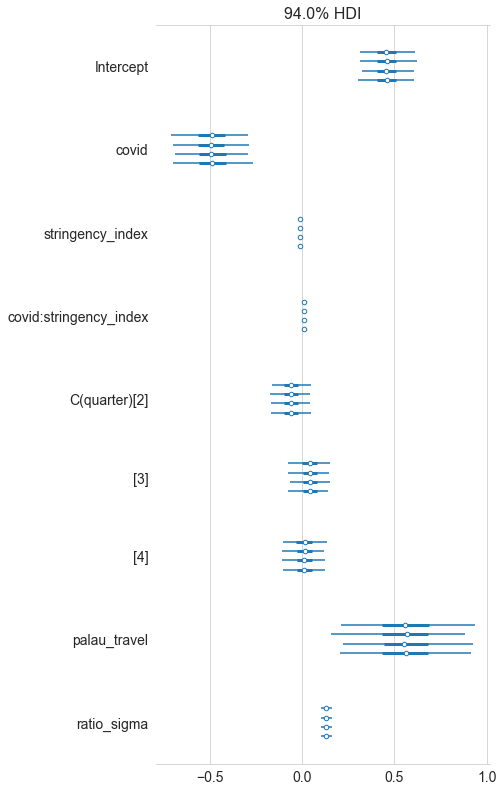
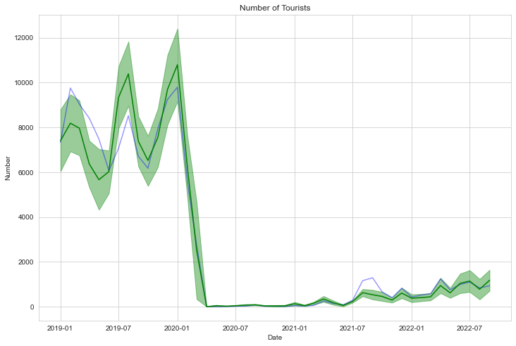
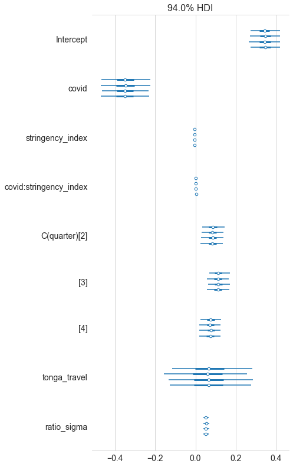
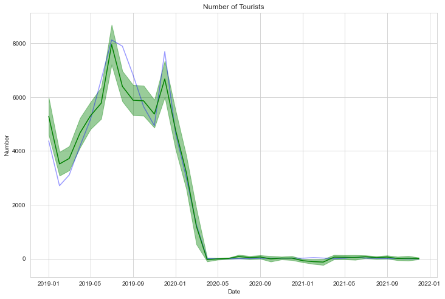
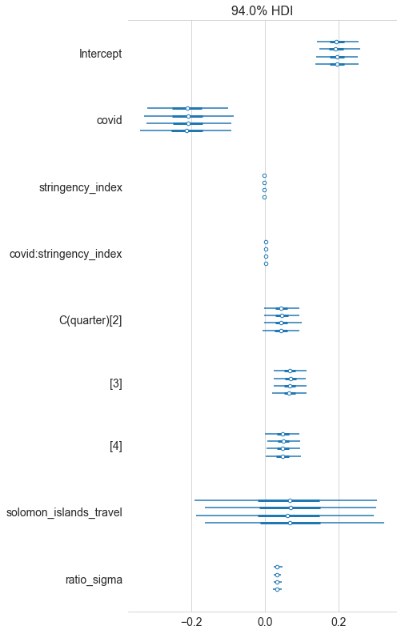
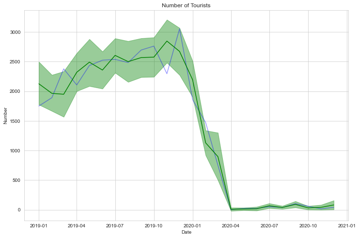
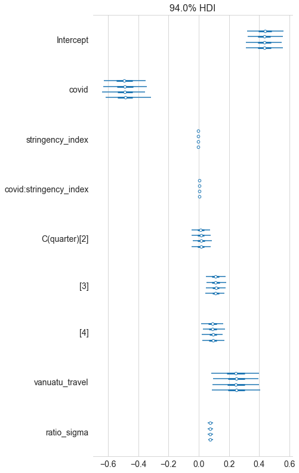
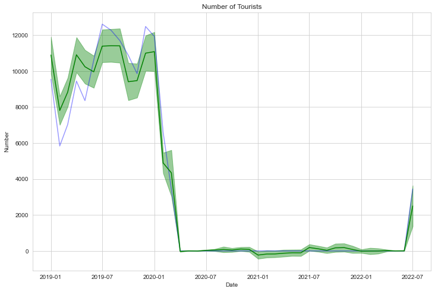
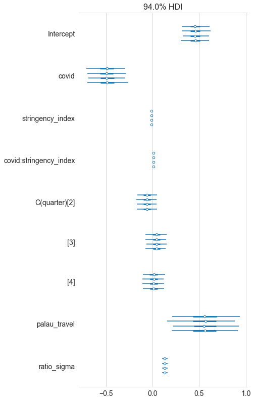
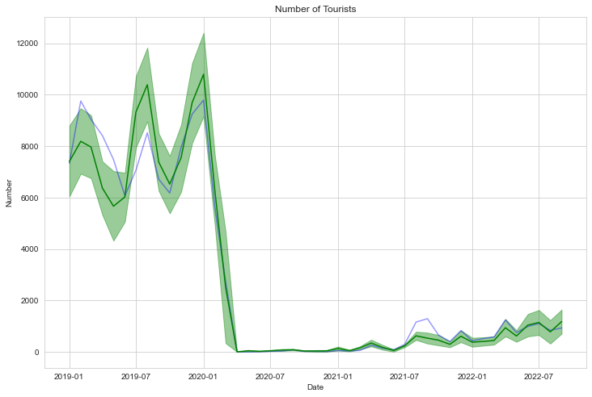
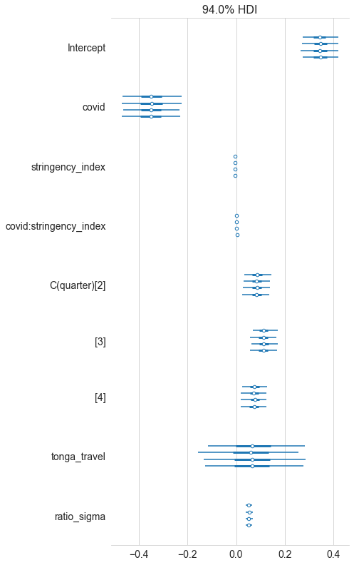
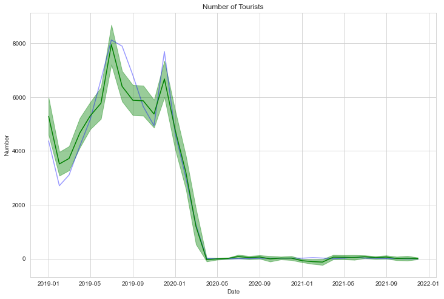
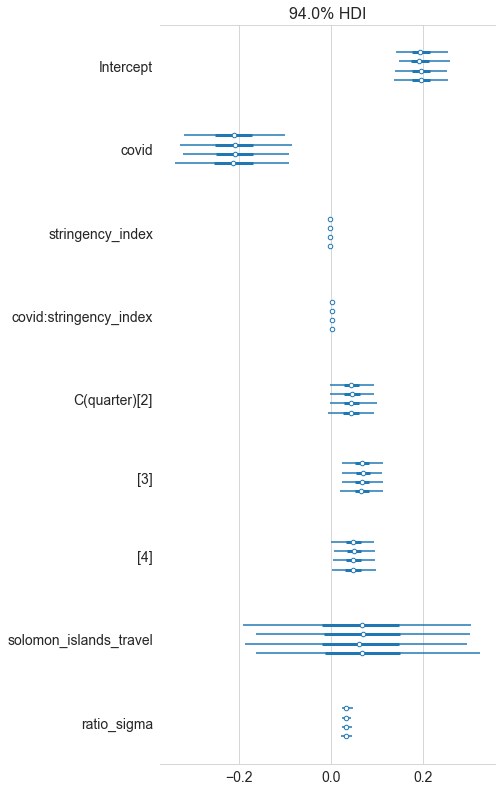
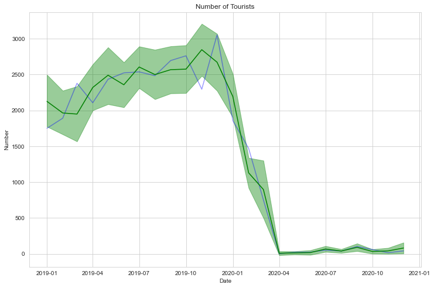
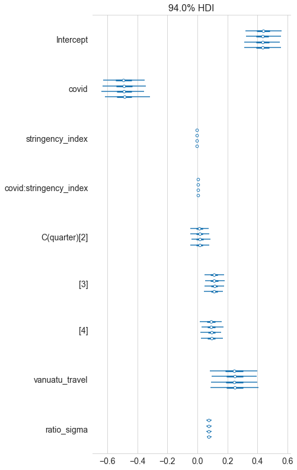
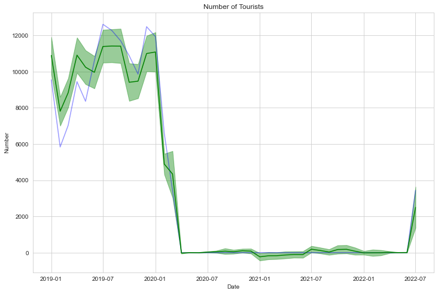